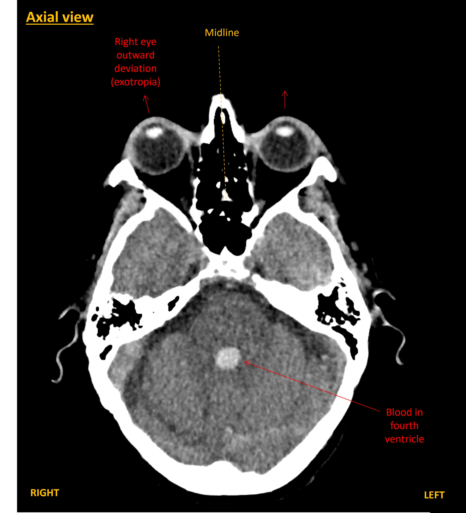
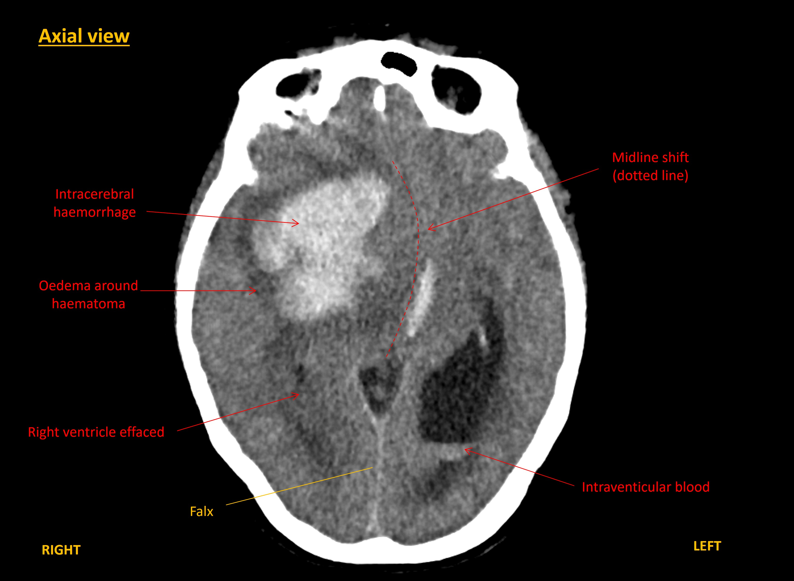
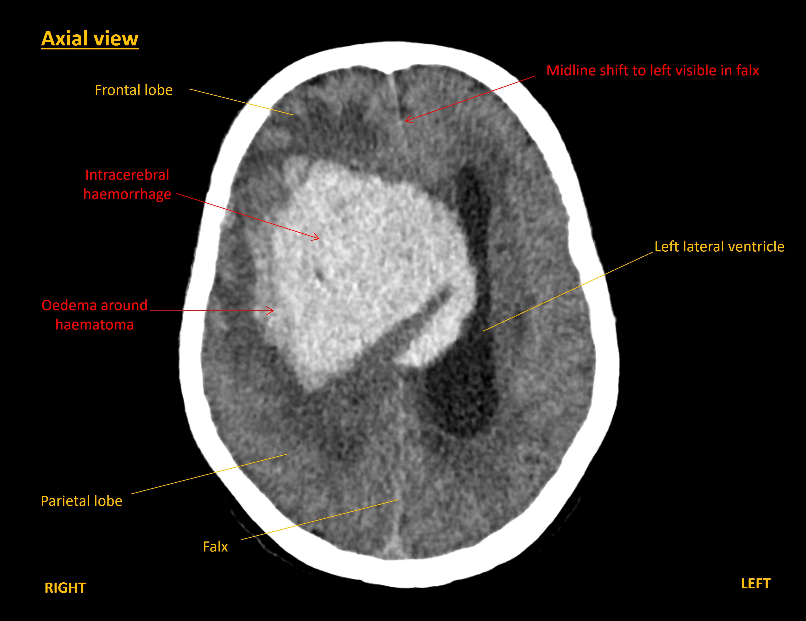
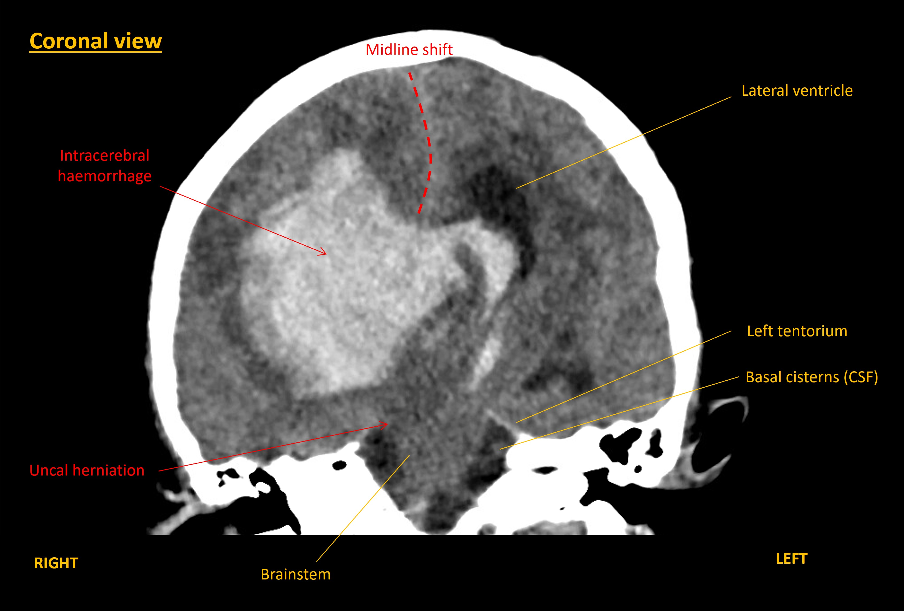

Case 14 - coma and dilated pupil
Outcome
A CT brain was performed immediately. This showed a large right-sided intracerebral haemorrhage within the frontal and parietal lobes. The blood was causing mass effect with midline shift towards the left, and right uncal herniation. The haemorrhage had extended into the ventricles, including down to the fourth ventricle, with hydrocephalus.




The patient's case was discussed with the on-call neurosurgery team who felt this was likely to be an unsurvivable event and recommended supportive care rather than surgical interventions. Anticoagulation reversal was considered. However, the patient became increasingly less responsive soon after the CT, with intermittent breathing pauses.
Discussions were conducted with her daughter. It was explained that this was a catastrophic intracerebral haemorrhage with mass effect and likely an unsurvivable event. Her daughter explained that the patient’s health and quality of life had been physically declining for several years, and that her pre-existing views were that in the event of a major disabling event such as a stroke she had consistently been clear that would not want to be kept alive. She also did not wish to be resuscitated if her heart stopped.
Factoring these views into the situation, the decision was made for comfort-based palliative care measures. The patient passed away peacefully several hours later with her family present.
Final diagnosisLarge intracerebral haemorrhage with brain herniation and hydrocephalus, presenting with coma, hemiparesis, and oculomotor palsy due to uncal herniation– with a fatal outcome
Key points